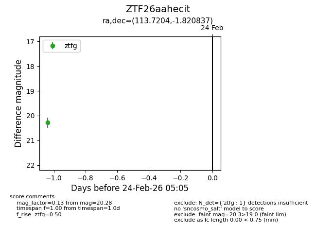
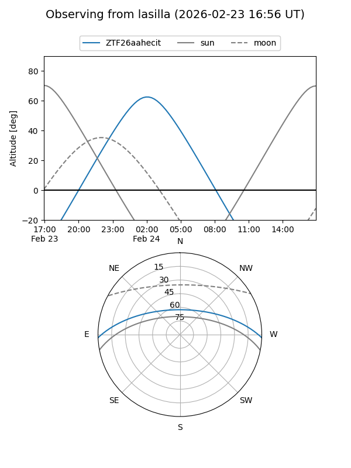
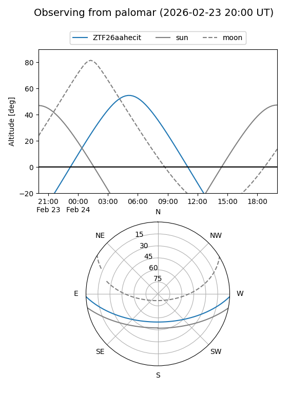

ZTF26aahecit
Target ZTF26aahecit at 2026-02-24 09:08
Aliases and brokers:
FINK: link
Lasair: link
ALeRCE: link
alt names
ZTF26aahecit (ztf,fink_ztf)
Coordinates:
equatorial (ra, dec) = 113.7204,-1.82084
equatorial (HMS+DMS) = 07:34:52.89,-01:49:15.01
galactic (l, b) = (219.5653,+8.80797)
Flags:
Photometry:
last ztfg=20.28
1 ztfg detections
Lightcurve

Visibility


Additional plots